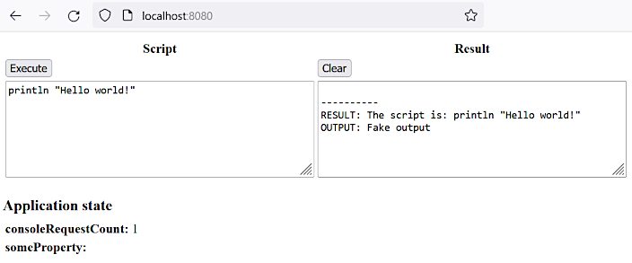

HomeIndex
HomeIndex GitHub
</>
GitHub
</>
Groovy console
In this section we are going to implement Groovy console that allows:
Warning
This solution may be convenient for a running web application diagnostic and manipulation. Still this makes the application unstable and vulnerable as the actions performed via the console are not properly controlled. The safer solution would be certain manipulation actions defined via corresponding endpoints with appropriate restrictions and checks. But the certain endpoints approach is harder to implement and it doesn't provide so much flexibility.
A more extensive variation may be found at [groovy_wc_github].
Go to Spring Initializr site and define the following configuration:
Alternatively the following link may be used: https://start.spring.io/#!type=maven-project&language=java&platformVersion=3.3.2&packaging=jar&jvmVersion=17&groupId=groovy.study&artifactId=groovy-console&name=&description=&packageName=groovyconsole&dependencies=web
Delete some unnecessary files (like mvnw and mvnw.cmd), do some other code cleaning and
reformatting.
The generated artifact is going to be a JAR file with dependencies. It is massive enough, so we
are going to bring the target location out of the working project directory. To do that, the
build/directory element is added into the pom.xml. The environment variable
TMP_MAVEN_BUILDS_DIR must be defined in the system.
Building (as Java 17 is not set by default we need to set the corresponding environment variables):
>set JAVA_HOME=%JAVA_17_HOME%
>set PATH=%JAVA_17_HOME%\bin;%PATH%
>mvn clean package
...
[INFO] --------------------< groovy.study:groovy-console >---------------------
[INFO] Building groovy-console 0.0.1-SNAPSHOT
[INFO] from pom.xml
[INFO] --------------------------------[ jar ]---------------------------------
...
[INFO] -------------------------------------------------------
[INFO] T E S T S
[INFO] -------------------------------------------------------
...
[INFO] Results:
[INFO]
[INFO] Tests run: 1, Failures: 0, Errors: 0, Skipped: 0
...
[INFO] ------------------------------------------------------------------------
[INFO] BUILD SUCCESS
[INFO] ------------------------------------------------------------------------
[INFO] Total time: 7.698 s
[INFO] Finished at: 2024-08-14T09:04:21+02:00
[INFO] ------------------------------------------------------------------------Running:
>cd /d %TMP_MAVEN_BUILDS_DIR%\groovy-console\
>set PATH=%JAVA_17_HOME%\bin;%PATH%
>java -jar groovy-console-0.0.1-SNAPSHOT.jar
. ____ _ __ _ _
/\\ / ___'_ __ _ _(_)_ __ __ _ \ \ \ \
( ( )\___ | '_ | '_| | '_ \/ _` | \ \ \ \
\\/ ___)| |_)| | | | | || (_| | ) ) ) )
' |____| .__|_| |_|_| |_\__, | / / / /
=========|_|==============|___/=/_/_/_/
:: Spring Boot :: (v3.3.2)
...
... : Tomcat started on port 8080 (http) with context path '/'
... : Started Application in 1.584 seconds (process running for 1.913)To stop press Ctrl+C (but not now please).
Alternatively the project may be run in an IDE by executing the class Application.java.
Testing the result in a browser: http://localhost:8080/. The result must look like this:
The following commit represents the newly automatically generated project with the above cleanup and customization:
Git commit:
66bfc6ce328ff55b7af8ccacf3d6a8a4f71848c9Groovy console Spring Boot project initialized
Dependency tree report:
>mvn dependency:tree > dependency_tree.txtGit commit:
5023a8176c11a98a7d4aecfe8c726aaa121c1269dependency tree added
The result is in the file dependency_tree.txt
(note that this is the latest version, not what it was at the current step, see the commit
above to see the the actual version at this point of time).
Git commit:
3c58c015b4e9378126ec86c2d0ce3a81f42f61a4UI and REST addedGit commit:
28ec2b720ddb6405c25600b85a8a0230fcc5ee9cdependency tree updated
The full dependency tree file is dependency_tree.txt.
Note
This is a very simple implementation that lacks a lot of important features (like security) required in production.
Here are some explanations. The UI is created as simple as possible so no template engine is used.
A single static HTML page is used for demonstration. Ajax is used
to execute the scripts and to update the displayed application state (see the
src/main/resources/static/console.html file).
The actual script execution is not implemented by now so the returned result is fake.
Here's the UI snapshot:

The following configuration adds a logic-less controller to serve the static page:
@Configuration
public class MvcConfig implements WebMvcConfigurer {
@Override
public void addViewControllers(ViewControllerRegistry registry) {
registry.addViewController("/").setViewName("console.html");
}
}The groovyconsole/State.java Spring bean is used for holding the application state that we are
going to manipulate later.
There are two REST endpoints created:
>curl -s -X POST -H "Content-Type:application/text" -d "2+2" http://localhost:8080/console | python -m json.tool
{
"error": null,
"result": "The script is: 2+2",
"output": "Fake output"
}
>curl -s http://localhost:8080/state | python -m json.tool
{
"consoleRequestCount": 5,
"someProperty": null
}
The Python json.tool module is used just for pretty-printing the output.
Git commit:
50c798b76895787c41f67b56b2f44b65d9e49dddGroovy console implementedGit commit:
6b0681171308eb83fa17ae42a7ffd9fd75f7f75ddependency tree updated
The full dependency tree file is dependency_tree.txt.
The following library is used for the actual Groovy scripts execution:
<dependency>
<groupId>org.codehaus.groovy</groupId>
<artifactId>groovy</artifactId>
<version>3.0.22</version>
</dependency>The src/main/java/groovyconsole/SpringBinding.java class makes the web application Spring
context available inside the Groovy scripts.
The groovyconsole.Controller#console endpoint method was rewritten to perform real Groovy scripts
execution.
The groovyconsole.Greeter class was created to demonstrate usage of arbitrary Java code artifacts
inside the Groovy scripts.
Some properties were added to the src/main/resources/application.properties file to check access
to them from the Groovy scripts.
Here the UI snapshot is repeated for convenience:
| Script | Result | Comments |
|---|---|---|
| |
The consoleRequestCount property value incremented.
|
| | The specified message printed to the web application's standard output. |
| |
The someProperty property value updated. Here a bean from the Spring
context is manipulated.
|
|
| Arbitrary Java code artifact is manipulated. |
|
| Spring environment property is accessed. |
|
| Errors are processed correctly. |